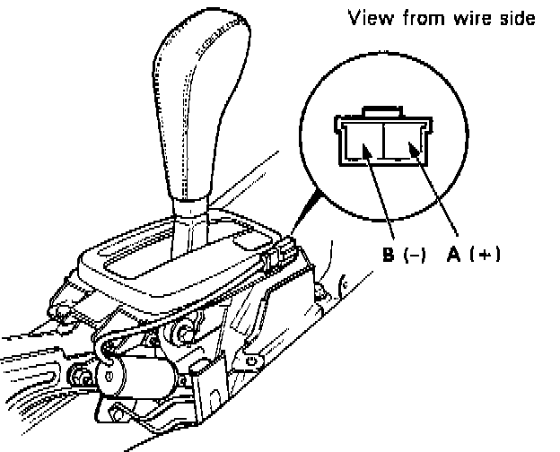

Shift Lock Solenoid Test & Replacement
SHIFT LOCK SOLENOID TEST1. Remove the console, then disconnect the 3-P connector of the shift lock solenoid from the main wire harness.
NOTE: Do not connect the battery terminals to wrong polarities because a diode is inside the solenoid.

2. Connect the battery positive to the A terminal and negative to the B terminal momentarily. Check the solenoid operation. If does not operate, replace it.
NOTE:
- When the shift lock solenoid is ON, check that there is clearance of 2.5 + 0.5 mm (0.098 + 0.02in) between the top of shift lock lever and lock pin groove (see clearance check on this page).
- When the shift lock solenoid is OFF, make sure that the lock pin is blocked by the shift lock lever.
- If not, adjust the position of shift lock solenoid.